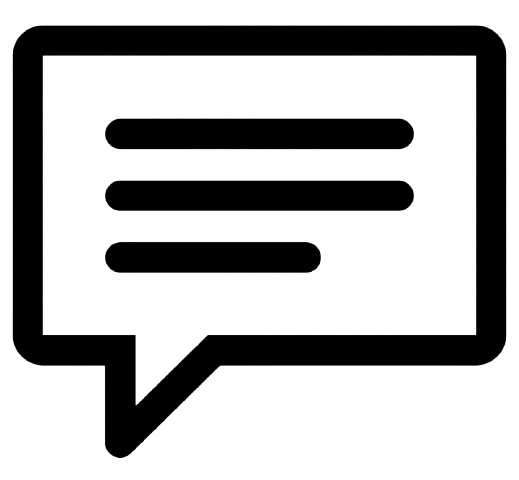

Tenkuu Shinpan
A colegial Yuri repentinamente se vê no último andar de um arranha-céu. Não sabendo o que está acontecendo ou onde ela está, ela vê uma figura mascarada e armada pronta para atacar. Ela evita o pior graças ao seu instinto de sobrevivência, mas logo descobre um estranho mundo urbano.
- Terror
- Acao

145 comments

Jigoku Shoujo
Jigoku Shoujo é um anime de terror, mistério, drama e fantasia, sobre uma garota chamada Ai Enma, que mora com sua avó, num lugar quieto e tranquilo, e possui um crepúsculo eterno. Ela não é uma garota comum, vive pelo propósito que lhe foi imposto: "Realizar as nossas vinganças e concretizar nosso ódio".
- Teror
- Shoujo
16743 comments

Perfect Blue
Mima Kirigoe é membro de uma banda de música pop japonesa (j-pop), chamada "CHAM!", que decide deixar a banda para se dedicar à carreira de atriz. Alguns fãs ficam descontentes com a repentina mudança de carreira, pois Mima, sendo um ídolo pop, é vista como uma menina inocente e angelical.
- Terror
- Drama
1340 comments

Berserk
Situado em um mundo de fantasia sombria inspirado na Europa medieval, a história gira em torno de Guts, um solitário mercenário, e Griffith, o líder de um bando de mercenários chamado de "Bando do Falcão".
- Terror
- Acao
1283 comments